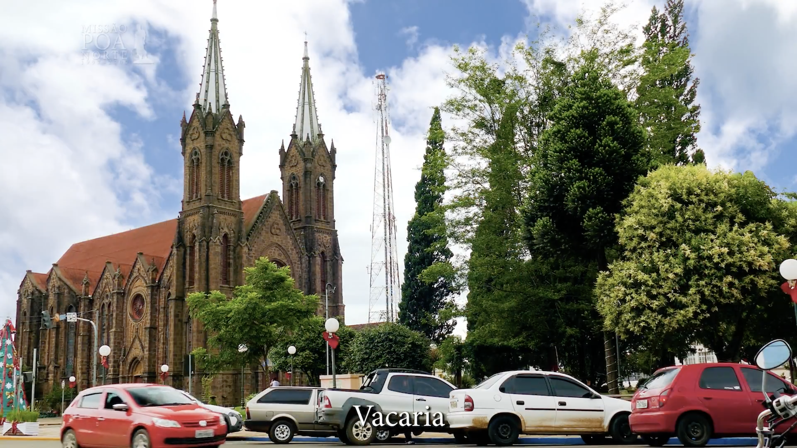
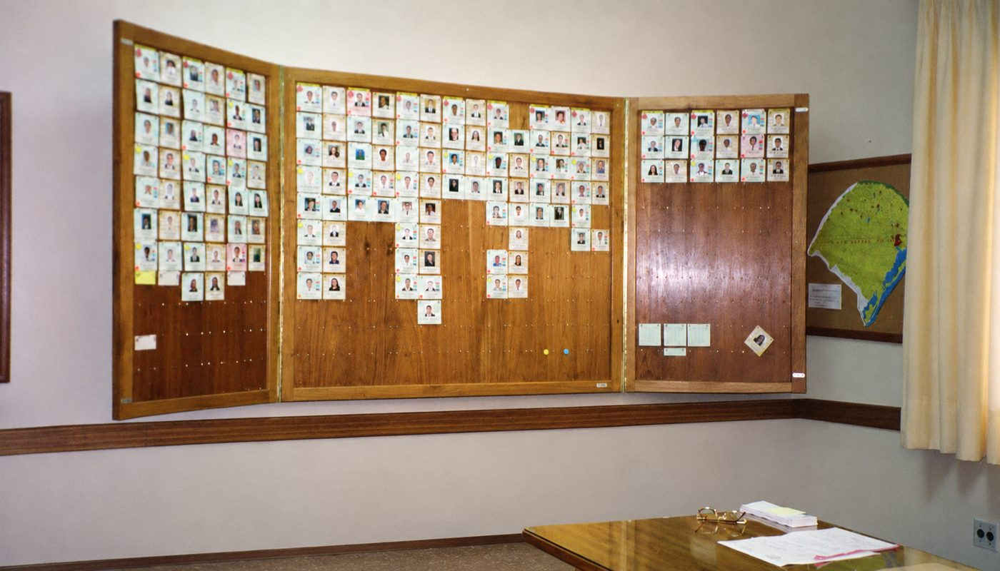
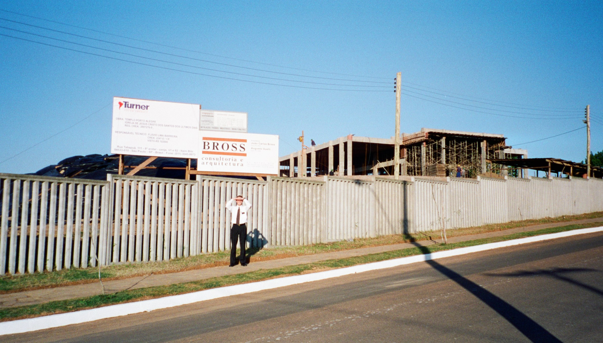

Missão Brasil Porto Alegre NorteBrazil Porto Alegre North Mission
O Chamado
Presidente Arlan e Síster Sally Woodward · 1997–2000President Arlan and Sister Sally Woodward · 1997–2000



Fotos extraídas do passeio em vídeo preparado pelo Élder George.Photos taken from video tour prepared by Elder George.
A MissãoThe Mission
Eleva o coração e regozija-te, pois é chegada a hora de tua missão. Lift up your heart and rejoice, for the hour of your mission is come.
A Missão Brasil Porto Alegre Norte cobria a metade norte do Rio Grande do Sul, o estado mais ao sul do Brasil: da zona norte de Porto Alegre e sua região metropolitana até a Serra Gaúcha, o Planalto e o Litoral Norte, e, até julho de 1998, o Noroeste e as Missões, perto da fronteira com a Argentina.
Porto Alegre e região metropolitana
A capital gaúcha e as cidades ao seu redor: Canoas, Esteio, Gravataí, Cachoeirinha, Alvorada e Guaíba. Bairros movimentados, ônibus lotados e muitas zonas da missão.
Vales do Sinos, Caí e Taquari
Novo Hamburgo, São Leopoldo, Sapiranga, Taquara, Montenegro e Lajeado. São Leopoldo foi o berço da imigração alemã no Brasil, em 1824, e o Vale dos Sinos é conhecido pela indústria de calçados.
Serra Gaúcha
Caxias do Sul, Bento Gonçalves, Farroupilha, Gramado e Canela. Terra da imigração italiana a partir de 1875, dos parreirais e do vinho, com invernos frios e, às vezes, neve.
Planalto e Campos de Cima da Serra
Passo Fundo, Erechim, Carazinho, Marau e Vacaria. Lavouras de soja, trigo e milho, os pomares de maçã de Vacaria e algumas das madrugadas mais frias do estado.
Litoral Norte
Osório, Tramandaí e Capão da Canoa. Praias, lagoas e vento constante: cheias de veranistas no verão e quase vazias no inverno.
Noroeste e Missões até julho de 1998
Santo Ângelo, Ijuí, Cruz Alta e Santa Rosa, perto das ruínas jesuítico-guaranis de São Miguel das Missões, Patrimônio Mundial da UNESCO.
O clima
Subtropical, com as quatro estações bem marcadas. Os verões são quentes e úmidos: em Porto Alegre o termômetro passa fácil dos 35 °C. Os invernos são frios e chuvosos, com geada no interior, neve de vez em quando nas partes altas da Serra e o minuano soprando do sudoeste. Muito missionário norte-americano chegou esperando o calor do Brasil e conheceu o frio gaúcho.
O povo
O gaúcho é hospitaleiro e orgulhoso das suas tradições: o chimarrão passado de mão em mão, o churrasco de domingo, os Centros de Tradições Gaúchas, onde se mantêm vivas as danças, a música e a pilcha, e o 20 de Setembro, que lembra a Revolução Farroupilha. A população mistura descendentes de portugueses e açorianos, alemães, italianos, poloneses, africanos e indígenas. No interior ainda se ouve em casa o alemão ou o dialeto vêneto trazido pelos imigrantes italianos, e todo missionário logo aprendia a dizer “bah, tchê!”.
The Brazil Porto Alegre North Mission covered the northern half of Rio Grande do Sul, Brazil's southernmost state: from the north side of Porto Alegre and its metro area up through the Serra Gaúcha highlands, the Planalto and the northern coast, and, until July 1998, the Northwest and the Missões region near the Argentine border.
Porto Alegre and its metro area
The state capital and the cities around it: Canoas, Esteio, Gravataí, Cachoeirinha, Alvorada and Guaíba. Busy neighborhoods, packed buses and many of the mission's zones.
Sinos, Caí and Taquari valleys
Novo Hamburgo, São Leopoldo, Sapiranga, Taquara, Montenegro and Lajeado. São Leopoldo was the cradle of German immigration to Brazil in 1824, and the Sinos valley is known for its shoe industry.
Serra Gaúcha
Caxias do Sul, Bento Gonçalves, Farroupilha, Gramado and Canela. Settled by Italian immigrants from 1875 on: vineyards, wine, cold winters and the occasional snowfall.
Planalto and Campos de Cima da Serra
Passo Fundo, Erechim, Carazinho, Marau and Vacaria. Soy, wheat and corn fields, Vacaria's apple orchards and some of the coldest mornings in the state.
Northern coast
Osório, Tramandaí and Capão da Canoa. Beaches, lagoons and constant wind: crowded with vacationers in summer, nearly empty in winter.
Northwest and Missões until July 1998
Santo Ângelo, Ijuí, Cruz Alta and Santa Rosa, near the Jesuit-Guarani ruins of São Miguel das Missões, a UNESCO World Heritage Site.
The climate
Subtropical, with four distinct seasons. Summers are hot and humid; Porto Alegre easily tops 35 °C (95 °F). Winters are cold and rainy, with frost inland, occasional snow in the high Serra and the minuano wind blowing in from the southwest. Many North American missionaries arrived expecting tropical Brazil and met the gaúcho winter instead.
The people
Gaúchos are warm, hospitable and proud of their traditions: chimarrão passed from hand to hand, Sunday churrasco, the Centros de Tradições Gaúchas (gaúcho tradition centers), clubs where people keep the folk dances, music and dress alive, and the 20th of September, which remembers the Farroupilha Revolution. The population blends Portuguese and Azorean, German, Italian, Polish, African and Indigenous roots. In the interior you can still hear German, or the Venetian dialect brought by the Italian immigrants, spoken at home, and every missionary soon learned to say “bah, tchê!”.
Um passeio de 8 minutos pela missãoAn 8-minute tour of the mission
Veja várias áreas da Missão Porto Alegre Norte nas imagens que o Élder George gravou quando voltou para visitar a missão.See several areas of the Porto Alegre North Mission in footage Elder George filmed on a return visit.
Assistir ao passeio · começa em 00:01:58Watch the tour · starts at 00:01:58
O QuadroThe Board
O Quadro do PresidenteThe President’s Board
No escritório da missão, O Quadro do Presidente reunia todas as zonas, áreas e missionários num só lugar. Cada ficha representava uma pessoa e seu lugar na missão: em que área servia, com qual companheiro e em qual zona. A cada mês, o quadro mudava para acompanhar as transferências, as novas duplas e a chegada e a despedida de missionários. Era um retrato da missão naquele momento.In the mission office, the President’s Board brought together all the zones, areas, and missionaries in one place. Each card represented a person and their place in the mission: where they served, who their companion was, and which zone they belonged to. Every month, the board changed to reflect transfers, new companionships, and missionaries arriving or returning home. It was a snapshot of the mission at that moment.
Aqui, você pode acompanhar essas mudanças mês a mês. Escolha um mês e toque no nome de uma área ou de um missionário para ver mais detalhes. Viu algum erro? Escreva para info@ochamado.org.Here, you can follow those changes month by month. Pick a month and tap an area or missionary name to see more details. Spot a mistake? Email info@ochamado.org.

Élder Widerberg Toque num nome para ver a chegada, a saída e todos os quadros do missionário.Tap a name to see when that missionary arrived and left, and every board they were on.
Sapucaia Toque no nome de uma área para ver todas as duplas que passaram por ela.Tap an area name to see every companionship that served there.
Síster Sena Borda tracejada: ainda não conseguimos ligar este nome a ninguém da lista de missionários. Pode estar faltando na lista, ou há dois missionários com o mesmo nome no mesmo período. Se você sabe quem é, escreva para info@ochamado.org.Dashed border: we couldn't match this name to anyone on the missionary list yet. They may be missing from the list, or two missionaries shared the name at the same time. If you know who it is, email info@ochamado.org.
Procure uma áreaFind an area
Digite o nome de uma área, cidade ou zona para ver todas as duplas que trabalharam ali.Type an area, city or zone to see every companionship that served there.
Os MissionáriosThe Missionaries
Os missionários em númerosThe missionaries by the numbers
Ao todo, 515 missionários, élderes e sísteres, serviram com os Woodward. Brasileiros e norte-americanos vieram quase meio a meio.In all, 515 missionaries, elders and sisters, served with the Woodwards. Brazilians and North Americans came in nearly equal numbers.
De onde vieramWhere they came from
Cada círculo é uma cidade de origem, de onde missionários mandaram os papéis da missão; quanto maior o círculo, mais missionários saíram de lá.Each circle is a hometown, the city where missionaries submitted their mission papers; the bigger the circle, the more missionaries came from there.
Chegadas e saídasArrivals and departures
A missão mudava todo mês: uns chegavam do CTM, outros voltavam para casa. Escolha o ano e o mês para ver quem chegou e quem partiu. A chegada é o mês em que o missionário chegou ao campo missionário, não a entrada no CTM.The mission changed every month, as new missionaries arrived from the MTC and others went home. Pick a year and month to see who arrived and who left. Arrival is the month the missionary arrived in the mission field, not when they entered the MTC.
Siga a jornada de um missionárioFollow a missionary’s journey
Digite um sobrenome e toque no nome para ver a jornada do missionário no mapa: o nome sai do escritório da missão em Porto Alegre, passa pelas áreas dos Quadros do Presidente e volta a Porto Alegre no fim da missão. Abaixo do mapa ficam o itinerário e todos os quadros e companheiros.Type a last name and tap the name to see that missionary’s journey on the map: the name leaves the mission office in Porto Alegre, moves through the areas on the President’s Boards and returns to Porto Alegre at the end of the mission. Below the map are the itinerary and every board and companion.
Quer incluir uma foto no seu mapa da jornada missionária? Envie a foto para info@ochamado.org e informe seu nome como aparecia na plaqueta (com Élder ou Síster), a área e o mês e ano aproximados em que a foto foi tirada. Want a photo added to your missionary journey map? Email it to info@ochamado.org and include your name as it appeared on your missionary name tag (with Elder or Sister), the area, and the approximate month and year the photo was taken.
O TemploThe Temple
A abertura de terra do Templo de Porto AlegreThe Porto Alegre Temple groundbreaking
 FotoPhoto: Ricardo630, Wikimedia Commons, CC BY 3.0
FotoPhoto: Ricardo630, Wikimedia Commons, CC BY 3.0




Fotos: cortesia do Élder HerethPhotos courtesy of Elder Hereth
No dia 2 de maio de 1998, durante a missão dos Woodward, mais de 3.500 pessoas se reuniram numa encosta com vista para Porto Alegre para a cerimônia de abertura de terra do primeiro templo do Rio Grande do Sul.
On May 2, 1998, during the Woodwards' mission, more than 3,500 people gathered on a hillside overlooking Porto Alegre to break ground for the first temple in Rio Grande do Sul.
- out 1997Oct 1997O Presidente Gordon B. Hinckley anuncia um templo em Porto Alegre na conferência geral de outubro de 1997.President Gordon B. Hinckley announces a temple in Porto Alegre at the October 1997 general conference.
- 2 mai 1998May 2, 1998O Presidente James E. Faust, da Primeira Presidência, preside a cerimônia de abertura de terra, com o Élder Joseph B. Wirthlin, do Quórum dos Doze, e o Élder W. Craig Zwick, presidente da Área Brasil.President James E. Faust of the First Presidency presides at the groundbreaking, with Elder Joseph B. Wirthlin of the Quorum of the Twelve and Elder W. Craig Zwick, president of the Brazil Area.
- dez 2000Dec 2000Visitação pública, com cerca de 25 mil visitantes.Public open house, with about 25,000 visitors.
- 17 dez 2000Dec 17, 2000O Presidente Hinckley dedica o templo, o 102º da Igreja e o terceiro do Brasil, no bairro Vila Jardim, com vista para a cidade e o Guaíba.President Hinckley dedicates the temple, the Church's 102nd and Brazil's third, in the Vila Jardim neighborhood overlooking the city and the Guaíba.
Esteve na abertura de terra? Fotos e lembranças desse dia são bem-vindas emWere you at the groundbreaking? Photos and memories of that day are welcome at info@ochamado.org, para que possam ser incluídas aqui., so they can be added here.
FonteSource: Church News, 9 de maio de 1998May 9, 1998.
Abertura de terra do Templo de Porto AlegrePorto Alegre Temple groundbreaking
Veja um trecho de 30 segundos da cerimônia com o Presidente James E. Faust no vídeo do reencontro preparado pelo Élder George.Watch a 30-second clip of the ceremony featuring President James E. Faust in Elder George’s reunion video.
Assistir à cerimônia a partir de 1:27Watch the groundbreaking starting at 1:27Os JornaisThe Newsletters
FotosPhotos
Fotos da missãoMission photos
Tem fotos da missão? Escreva para info@ochamado.org.Have photos from the mission? Email info@ochamado.org.
Publicamos fotos enviadas por ex-missionários e amigos da missão. Só identificamos pessoas pelo nome com a permissão delas. Se você aparece numa foto e prefere que ela seja retirada, ou que seu nome não apareça, escreva para info@ochamado.org.We publish photos sent in by former missionaries and friends of the mission. People are only named with their permission. If you appear in a photo and would rather it be removed, or your name left out, email info@ochamado.org.
HistóriasStories
Histórias da missãoMission stories
Batismos, chuvas de verão, ônibus lotados, aquela família que ninguém esquece. Toda missão tem histórias. Mande a sua para que ela fique guardada aqui junto com as dos outros missionários.Baptisms, summer storms, packed buses, that one family no one forgets. Every mission has its stories. Send yours so it can be kept here with those of other missionaries.
Os ReencontrosThe Reunions
Abril de 2016April 2016
Este vídeo de 100 minutos do reencontro nos leva de volta aos lugares e às pessoas da missão, com um breve registro da abertura de terra do Templo de Porto Alegre, presidida pelo Presidente James E. Faust, e um passeio por várias áreas da missão. As apresentações dos missionários presentes no reencontro dão lugar a imagens dos tempos de missão no Brasil.This 100-minute reunion video revisits the places and people of the mission, from a brief glimpse of the Porto Alegre Temple groundbreaking, where President James E. Faust presided, to a tour of several mission areas. Introductions of the missionaries gathered for the reunion lead into footage of their mission days in Brazil.
Matthew J. Grow relembra a história da Igreja no Brasil, seguido pelas mensagens da Síster Sally J. Woodward e do Presidente Arlan W. Woodward. O hino da missão e as Noites Gaúchas completam esse reencontro de rostos, vozes e lembranças.Matthew J. Grow reflects on Church history in Brazil, followed by messages from Sister Sally J. Woodward and President Arlan W. Woodward. The mission hymn and Noites Gaúchas round out this reunion of familiar faces, voices, and memories.

Vídeo: cortesia do Élder GeorgeVideo courtesy of Elder George
Os WoodwardThe Woodwards
 FotoPhoto: Church News, 2007
FotoPhoto: Church News, 2007
Arlan & Sally Woodward
Presidiram a Missão Brasil Porto Alegre Norte de julho de 1997 a julho de 2000. Em 2007 voltaram ao Brasil para presidir o Centro de Treinamento Missionário.Presided over the Brazil Porto Alegre North Mission, July 1997 – July 2000. In 2007 they returned to Brazil to preside over the Missionary Training Center.
Sobre e contatoAbout
Sobre este siteAbout this site
Nossa históriaOur shared history
As primeiras versões deste site ajudavam os ex-missionários a se reencontrar, antes que as redes sociais assumissem esse papel. Hoje, com os registros históricos compartilhados pelos Woodward, o site preserva a história que vivemos juntos na missão: onde servimos, quando estivemos lá e com quem servimos.Early versions of this website helped returned missionaries reconnect before social media took on that role. Today, using historical records shared by the Woodwards, the site preserves our shared mission history: where we served, when we were there, and with whom we served.
Quem cuida do siteBehind the site
Em preparação para o 30º aniversário da chegada dos Woodward, em julho de 2027, o Élder Hereth, que serviu com eles, renovou este site com a ajuda de IA. Seu sobrinho, que serviu na Missão Portugal Porto, ajudou digitando os registros do Quadro do Presidente a partir dos jornais da missão.In preparation for the 30th anniversary of the Woodwards’ arrival in July 2027, Elder Hereth, who served with them, updated this site with the help of AI. His nephew, who served in the Portugal Porto Mission, helped by typing in the President’s Board records from the mission newsletters.
Com gratidãoWith gratitude
Agradecemos ao Presidente Arlan Woodward e à Síster Sally Woodward, em memória, que guardaram e compartilharam os registros da missão e, anos atrás, deixaram recursos para preservá-los e manter as versões anteriores, a atual e as futuras deste site.With thanks to President Arlan Woodward and, in loving memory, Sister Sally Woodward, who kept and shared the mission's records and, years ago, set aside funds to preserve them and keep previous, current, and future versions of this site going.
 FotoPhoto: Cesar Vieira, CC BY-SA 4.0
FotoPhoto: Cesar Vieira, CC BY-SA 4.0